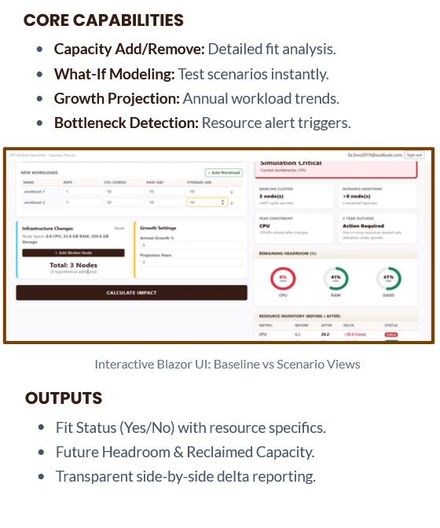
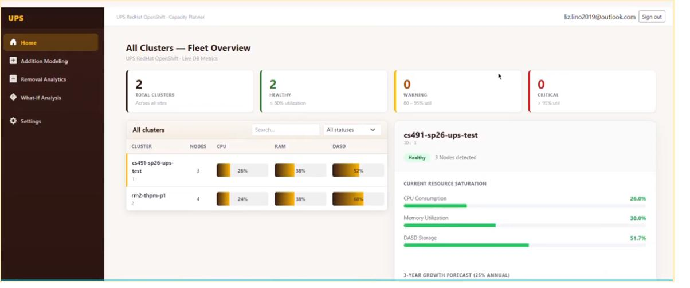
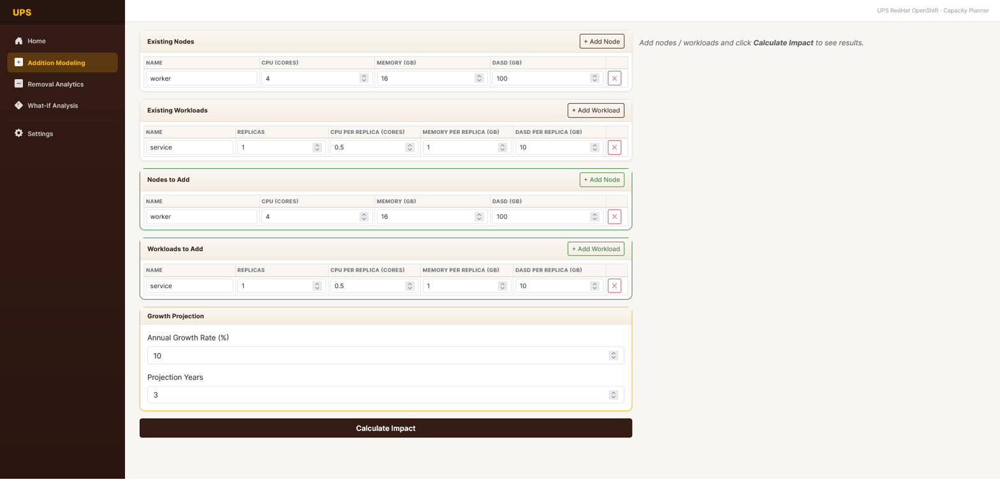
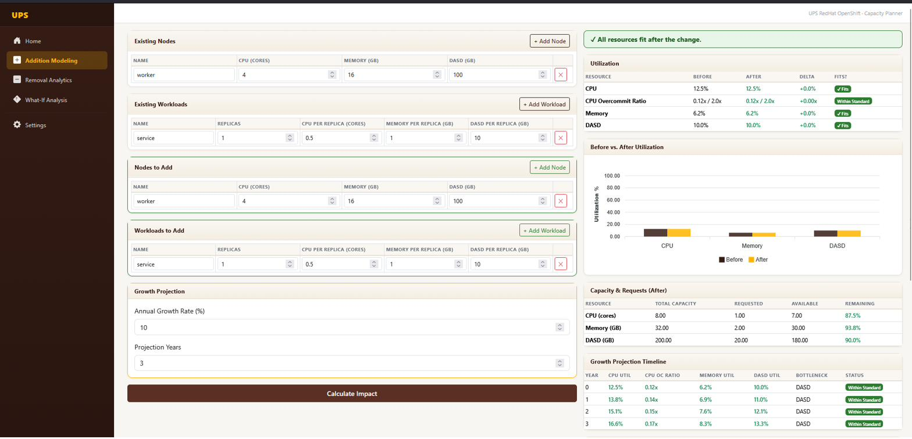
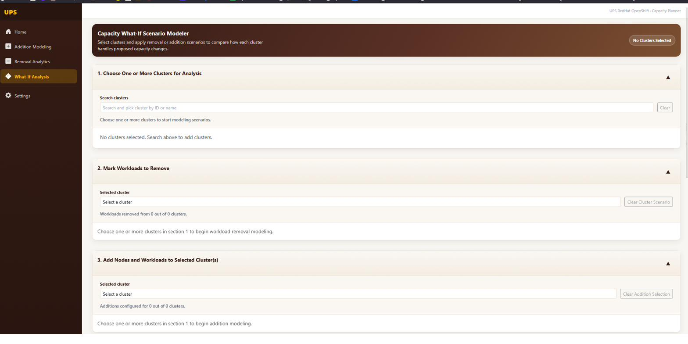
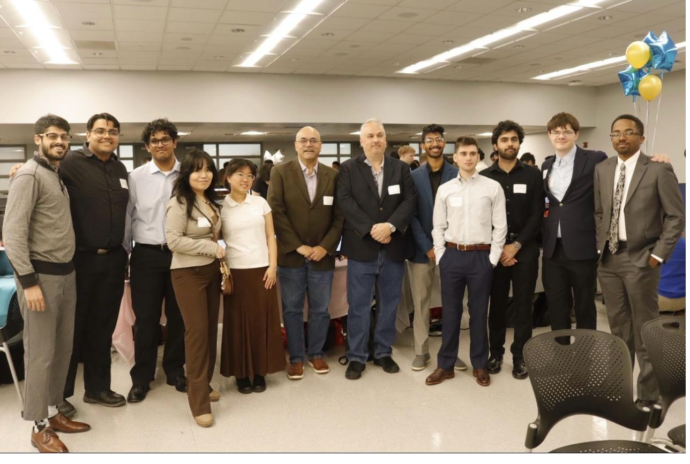

The problem no one had time to see
UPS operates one of the world's largest private logistics networks. Behind the scenes, that means thousands of computing clusters — OpenShift environments running CPU-intensive routing, tracking, and delivery optimization workloads across 1,100+ sites globally.
The infrastructure team was managing capacity manually: exporting spreadsheets, running ad-hoc calculations, and making procurement decisions based on intuition and historical averages. There was no centralized view of cluster health. No way to model "what if we add three more nodes?" No early warning before a cluster hit critical utilization.
When we first sat down with the team, the most honest thing they said was: "We often don't know we have a problem until it's already a problem." Our capstone project would be to change that.
Understanding the users
We conducted stakeholder interviews and developed two primary personas based on the infrastructure team's actual roles and pain points:
Derek — Infrastructure Engineer
Goal: Understand current cluster load at a glance and model the impact of adding or removing nodes before making a change request.
Frustration: Spending 2–3 hours per week pulling data from multiple systems just to answer basic capacity questions for his manager.
Priya — Platform Lead
Goal: Review cluster health across all sites in one view, identify which clusters are approaching critical thresholds, and make budget decisions backed by growth projections.
Frustration: Reports from individual engineers arrive in different formats, making cross-site comparison nearly impossible.
Scoping four core capabilities
After research synthesis, our team aligned on a 5-sprint Agile roadmap tracked in Jira. My role: frontend UI/UX engineer, responsible for Blazor component architecture, the Figma design system, and translating specs into working code.
We defined four core capability modules the platform needed to deliver:
Fleet Overview
Real-time summary of all clusters — health status, node count, CPU/RAM/DASD utilization — in a single scannable view.
Addition Modeling
Simulate adding nodes or workloads and instantly see the projected utilization impact before making any infrastructure change.
Removal Analytics
Model what happens when workloads are decommissioned — identify reclaimed capacity and confirm remaining headroom.
What-If Analysis
Combine additions and removals in a scenario modeler to compare baseline vs. proposed state across all three resource dimensions.
We also established a 3-year growth projection model — because infrastructure teams don't just need to know where they are; they need to know when they'll run out of headroom.
From sketch to system: designing for trust
The first design question was: what does a dashboard for high-stakes infrastructure decisions feel like? These aren't marketing metrics — they're the numbers that determine whether a 7-node production cluster survives an upgrade cycle or goes down at 2am.
We started with low-fidelity sketches, exploring different information hierarchies. Early ideas included a map-based view (sites plotted geographically) and a timeline-first view (showing trend data as the lead element). Both were too visually noisy for the core use case.
The insight that shaped the final design: engineers need to answer "is this okay?" in under 5 seconds. That meant status-forward design — color-coded health indicators (Healthy / Warning / Critical) as the first thing you see, with details available on demand.
The visual language: UPS brand colors (dark brown + amber) on a light background — a professional, enterprise-grade aesthetic that felt trustworthy rather than flashy. I built the Figma design system first, then implemented it directly in Blazor.

Capability overview from the project documentation — the four modules we designed and built.
Building in Blazor: design becoming real
Over five Agile sprints, I moved from wireframes to a fully functional Blazor/.NET web application. Each sprint began with design review with the team and ended with a working demo to our UPS stakeholders. Here's what we shipped:
Fleet Overview — the command center
The home screen surfaces all clusters with real-time utilization bars for CPU, RAM, and DASD (storage). A summary row at the top shows the count of Healthy / Warning / Critical clusters at a glance. Clicking any cluster opens a sidebar panel with current saturation percentages and a 3-year growth projection chart.

Fleet Overview — all clusters, health status, and resource utilization in one view.

Live DB Metrics view showing real-time cluster resource saturation with 3-year growth forecast.
Addition Modeling — simulate before you commit
The most complex module to design: a form-based input system where engineers can specify existing nodes, add hypothetical new nodes and workloads, set an annual growth rate, and click "Calculate Impact" to see the projected utilization before and after the change. The result panel shows a delta comparison, fit status, and a growth projection timeline.


Addition Modeling: configure a scenario (left) and see the projected impact instantly (right).

The results panel shows before/after utilization, growth projection timeline, and fit status per resource.
What-If Analysis — scenario modeling at scale
The What-If module lets engineers select one or more clusters, configure both removals and additions in the same scenario, and compare baseline vs. proposed utilization across all resource dimensions. The grouped bar chart shows the delta visually; the table below gives precise numbers with color-coded deltas.

What-If Analysis: choose clusters and configure removal and addition scenarios simultaneously.

Analysis results — baseline vs. scenario comparison across CPU, Memory, and DASD with growth projections.
Presenting to UPS, earning the handoff
At the end of our five-sprint engagement, we presented the completed platform to a panel of UPS technology leaders and NJIT faculty at a formal capstone showcase. The team demoed all four modules with live data flowing through the Blazor frontend.

The capstone showcase at NJIT — our team presenting to UPS stakeholders and faculty judges.
The platform was handed off to the UPS IT implementation team at the close of the project, with documentation covering the Blazor component architecture, API integration patterns, and the data model for cluster metrics. The feedback from UPS was that the tool addressed real operational pain — the ability to run scenarios before submitting hardware requests alone was cited as a significant time-saver for the infrastructure team.
What I learned
This project taught me that enterprise tool design is as much about trust as it is about clarity. Every design decision — from the color of a utilization bar to the precision of a delta percentage — signals to the user whether they can rely on this tool to make a real decision. I became a much more deliberate designer working in this context.
I also learned to advocate for design in Agile ceremonies. When a sprint demo revealed that engineers were ignoring the growth projection chart (too small, too subtle), we reprioritized it in the next sprint. Iteration in response to real feedback — not hypothetical user stories — is where the design actually gets good.